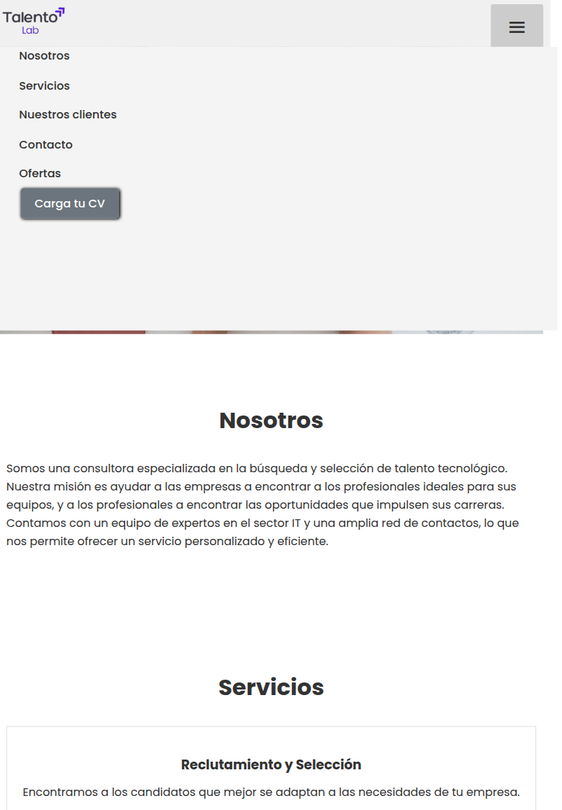
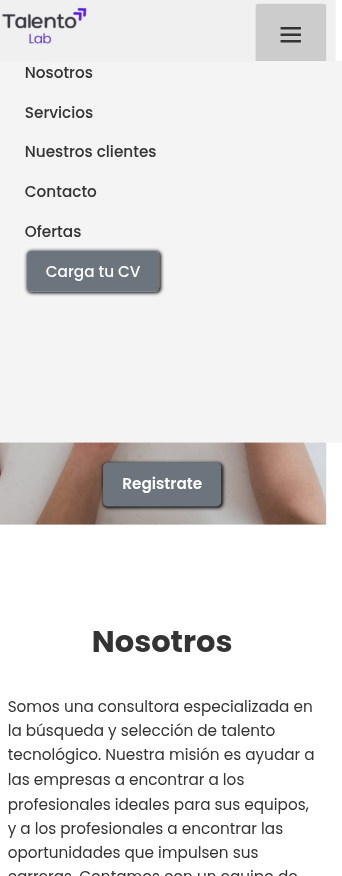
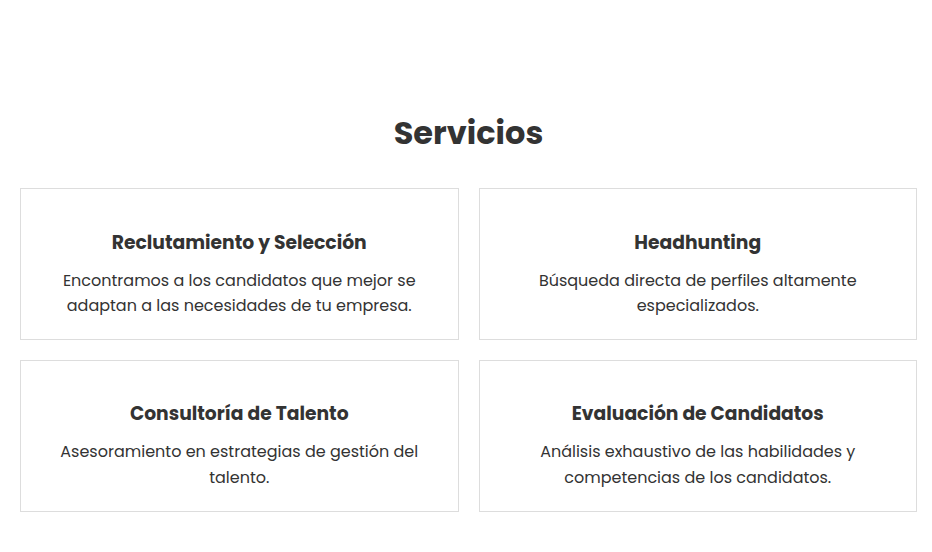
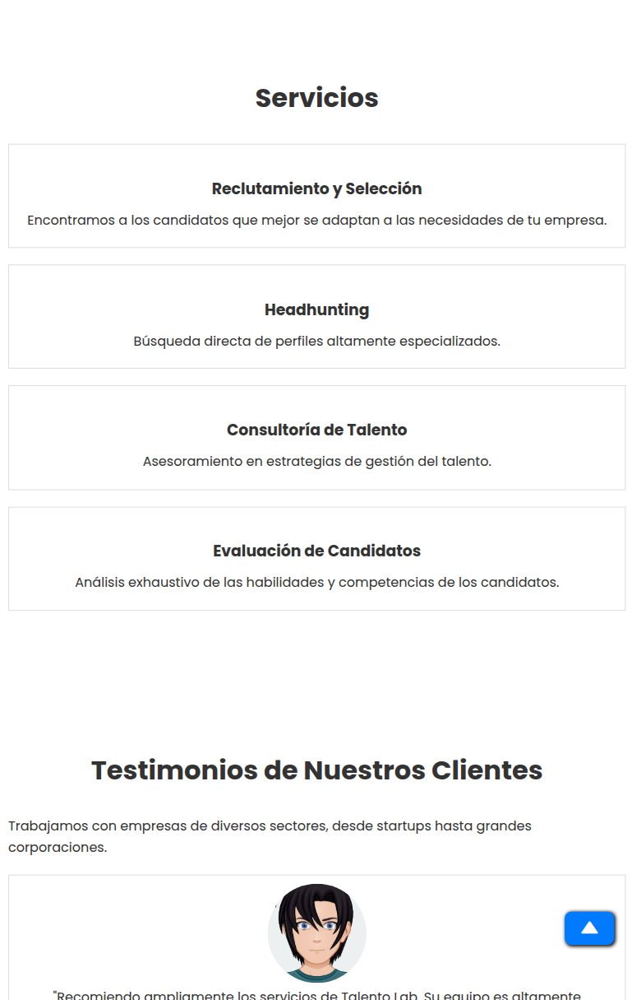
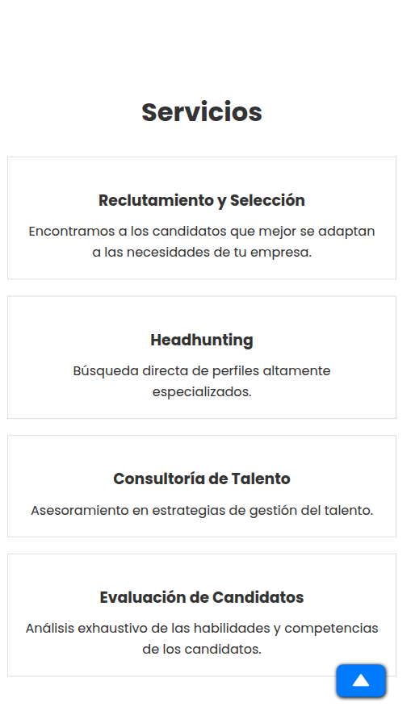
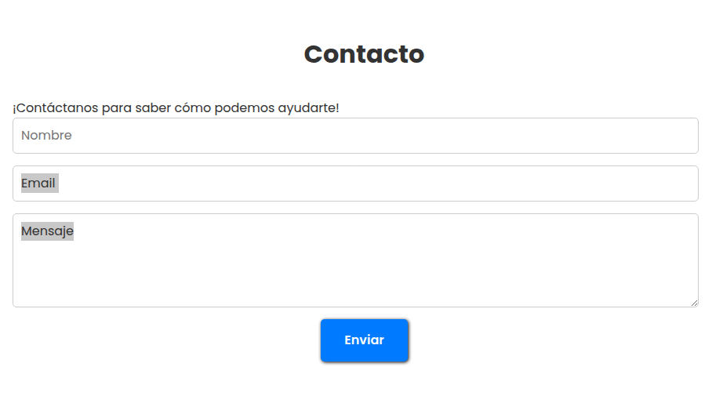
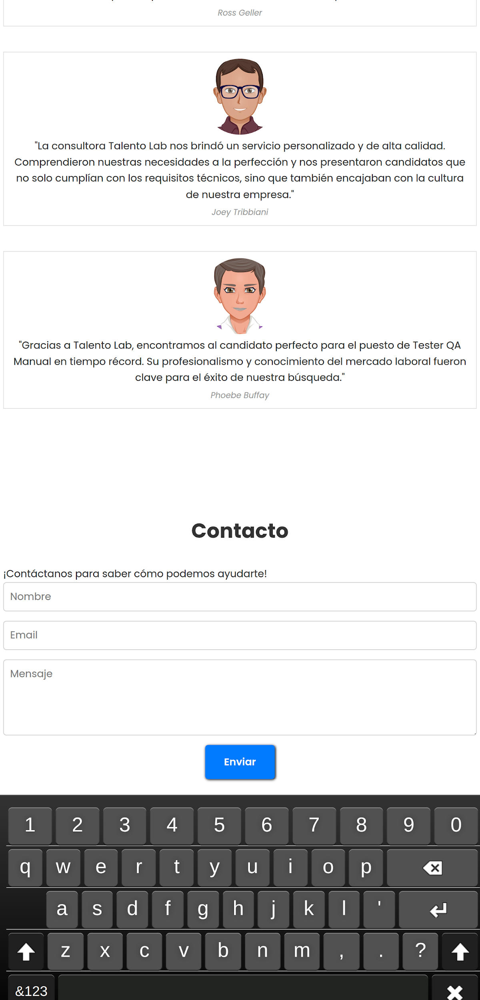
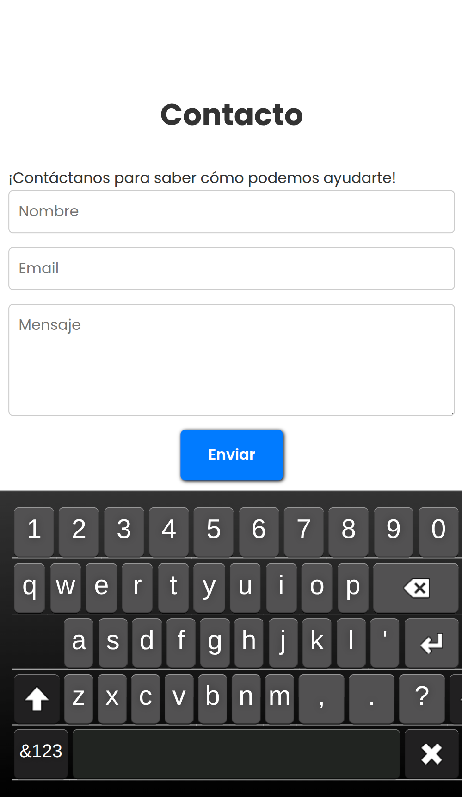
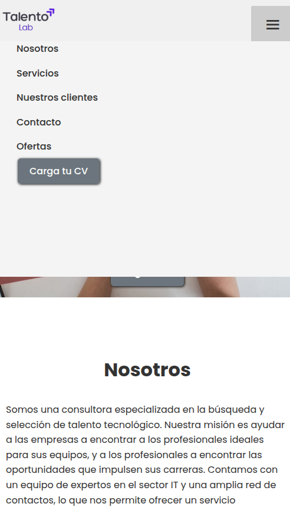
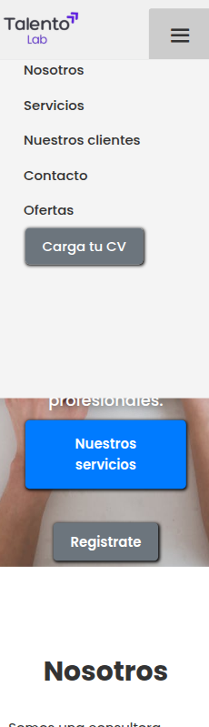

| A | B | C | D | E | F | G | H | I | J | K | |
|---|---|---|---|---|---|---|---|---|---|---|---|
1 | Métricas TechLab - Responsividad y compatibilidad | ||||||||||
2 | |||||||||||
3 | 768px | ||||||||||
4 | 1440px | 500px | |||||||||
5 | Módulo / User Story | Desktop | Adjunto | Observaciones | Tablet | Adjunto | Observaciones | Móvil | Adjunto | Observaciones | Criterios de aceptación (mínimos) |
6 | 1. Navegación principal “Como visitante, quiero ver y usar el menú (‘Nosotros’, ‘Servicios’, …) para moverme por el sitio.” | – Menú horizontal en el header.– Hover sobre ítems resalta correctamente.– “Carga tu CV” visible. | La interfaz en pantalla completa cumple satisfactoriamente con los requisitos mínimos de accesibilidad y funcionalidad: * El componente de menú se despliega y se retrae mediante un único evento (clic/toque), según lo especificado. * Todos los enlaces del menú y de la página principal son legibles (contraste adecuado) y funcionales (clicables), sin solapamiento de elementos UI. * El Call to Action "Carga tu CV" mantiene su posición fija y visible (sticky) en todo momento, garantizando su constante accesibilidad al usuario. Conclusión: Se superan los criterios mínimos de aceptación (Acceptance Criteria). | – Botón hamburguesa aparece si la ventana se estrecha:– Al hacer clic, lista todos los items.– Cierre al volver a clicar fuera. |  | La interfaz en vista estrecha cumple plenamente con los criterios mínimos y con las especificaciones de diseño adaptable (responsive design): 1. Funcionalidad Base (Requisitos PC): * El menú se despliega/cierra con un solo toque. * Todos los enlaces son legibles y clicables, sin elementos superpuestos. * El CTA "Carga tu CV" mantiene su accesibilidad y visibilidad constante. 2. Menú de Navegación Adaptable (Hamburguesa): * El botón hamburguesa aparece correctamente al estrecharse la ventana (viewport). * Al tocar el botón, se despliegan todos los ítems de la lista de navegación. * El menú cierra al clicar/tocar fuera del área del menú desplegado. Conclusión: La experiencia de usuario y la accesibilidad se mantienen intactas en el perfil tablet, superando todos los criterios de aceptación. | – Ícono hamburguesa siempre presente.– Al abrir, cada ítem ocupa al menos 44×44 px para el dedo.– “Carga tu CV” destacado. |  | La visualización en dispositivos móviles supera los estándares definidos, garantizando una alta usabilidad y accesibilidad táctil:* El ícono de hamburguesa permanece siempre presente y visible en la interfaz.* Al desplegar el menú, cada ítem de navegación ocupa una superficie de al menos $44 \times 44$ px, asegurando una interacción precisa con el dedo.* El Call to Action (CTA) "Carga tu CV" se encuentra claramente destacado visualmente, manteniendo su prioridad en la navegación.Conclusión: Se verifica la funcionalidad completa de la navegación en móviles, cumpliendo con los requisitos de tamaño táctil definidos para una experiencia de usuario óptima. | 1. El menú se despliega/cierra con un solo toque o clic.2. Todos los enlaces son legibles y clicables sin elementos superpuestos.3. “Carga tu CV” permanece siempre accesible. | |
7 | 2. Sección “Servicios”“Como visitante, quiero ver las 4 tarjetas de servicio y su texto claro.” | – 4 tarjetas alineadas en fila.– Títulos y descripciones legibles.– Espaciado uniforme. |  | Cumplimiento total. La sección muestra las 4 tarjetas en una fila con espaciado uniforme. Se verifica el ajuste del grid (4/fila), el correcto adaptado (wrap) de textos y el respeto al margen mínimo de 8 px. | – 2 tarjetas por fila (grid 2×2).– Texto centrado.– Tarjetas no se solapan ni “roban” ancho. |  | FALLO EN EL CRITERIO DE RESPONSIVIDAD (BREAKPOINT).La sección no cumple con el layout definido para el ancho exacto de $768$ px.* Fallo Detectado: A la resolución de $768$ px, la sección muestra una sola columna (1 tarjeta por fila), lo que es incorrecto.* Comportamiento Observado: El layout de 2 tarjetas por fila (el requerido para Tablet) solo se activa correctamente a resoluciones mayores a $768$ px. Acción Requerida: Se debe ajustar el media query (el breakpoint CSS) para que el grid de 2 columnas se aplique a partir de los $768$ px o antes, según el diseño de referencia. | – 1 tarjeta por fila (scroll vertical).– Botones/cards deben tener padding suficiente.– Texto no se corta. |  | Cumplimiento total. El diseño de la sección es funcional y accesible en dispositivos móviles. * La sección se visualiza correctamente con 1 tarjeta por fila, permitiendo el scroll vertical ininterrumpido. * Se valida que los elementos interactivos (cards/botones) cuentan con suficiente padding, facilitando la interacción táctil. * El texto se adapta correctamente al contenedor (sin overflow) y no se corta, garantizando su legibilidad. Conclusión: La implementación móvil es correcta y asegura la usabilidad de la sección en pantallas pequeñas. | 1. Siempre se muestran todas las tarjetas en un grid ajustado (4/2/1 por fila).2. Los textos se adaptan (wrap) sin salirse del contenedor.3. Mantiene márgenes mínimos de 8 px. |
8 | 3. Formulario “Contacto”“Como usuario, quiero rellenar y enviar el formulario de contacto.” | – Campos Nombre, Email y Mensaje apilan verticalmente.– Botón “Enviar” activado tras validación. |  | Validación Funcional Exitosa. El formulario cumple con la alineación: los campos (Nombre, Email, Mensaje) se apilan verticalmente. Se verifica que el botón "Enviar" se activa correctamente solo tras la validación exitosa de todos los campos requeridos. | – Campos adaptados al ancho (50–70 % del viewport).– Teclado virtual no oculta el campo activo. |  | Validación Táctil (Teclado Virtual): Se verifica que, al activar el teclado en pantalla, el viewport se ajusta correctamente, manteniendo el campo de entrada activo visible y sin ser ocultado por el teclado virtual. | – Formulario ocupa toda la pantalla de ancho.– Al enfocar, el campo se ve sobre el teclado.– Botón accesible sin scroll horizontal. |  | Usabilidad y Accesibilidad Táctil Confirmada. El formulario cumple plenamente con los requisitos de la interfaz móvil. * Aprovechamiento de Pantalla: El formulario ocupa correctamente todo el ancho de la pantalla disponible. * Interacción con Teclado: Se verifica que, al enfocar un campo de entrada, la pantalla se ajusta y el campo activo se mantiene visible sobre el teclado virtual (no se oculta). * Accesibilidad del Botón: El botón "Enviar" está accesible inmediatamente en pantalla, sin necesidad de desplazamiento (scroll) horizontal. Conclusión: El flujo de contacto en móviles es funcional y altamente usable, validando un diseño correcto para pantallas pequeñas. | 1. Todos los inputs mantienen label/placeholder visibles al enfocar.2. Botón “Enviar” solo habilitado con validación de email.3. Mensajes de error claros si falta dato. |
9 | 4. CTA “Carga tu CV”“Como candidato, quiero subir mi CV con un solo clic.” | – Botón gris “Carga tu CV” en header.– Aparece diálogo de selección de archivo.– Solo PDF/DOCX. | FALLO FUNCIONAL CRÍTICO (Redirección Incorrecta). Comportamiento Esperado NO Cumplido: Al hacer clic en el botón "Carga tu CV", el sistema NO despliega el diálogo de selección de archivo nativo. Comportamiento Observado: En su lugar, el usuario es redirigido incorrectamente a la página de Registro o Login. Impacto: No se puede ejecutar el requisito de subir el CV ni validar el filtro de archivos (PDF/DOCX). El botón tiene una función/mapeo incorrecto para un usuario no autenticado. Acción Requerida: Se debe corregir el handler del CTA para que cumpla con el flujo de selección de archivo, o si se requiere iniciar sesión, el mensaje de error o redirección debe ser explícito. | – Botón en menú hamburguesa.– Al tocar, abre selector de archivos nativo.– Progreso de carga visible. |  | ALLO FUNCIONAL CRÍTICO REPLICADO. Positivo/Cumplido: El botón "Carga tu CV" está correctamente integrado en el menú de hamburguesa. Fallo Persistente: Al tocar el botón, la aplicación NO abre el selector de archivos nativo. En su lugar, el usuario es redirigido a la pantalla de Login o Registro. Impacto: Debido a esta redirección incorrecta, no fue posible validar los requisitos de accesibilidad (selector de archivos nativo) ni la visibilidad del progreso de carga en esta vista. Acción Requerida: La corrección del handler del botón para usuarios no autenticados debe ser prioritaria para resolver esta falla en todos los viewports. | – Botón “Carga tu CV” fijo en la barra superior o un FAB (más accesible).– Abre selector nativo.– Mensaje de éxito/fracaso legible. |  | ALLO FUNCIONAL CRÍTICO Y REPLICADO EN 3 VIEWPORTS. Positivo/Cumplido: El botón "Carga tu CV" está correctamente implementado como un elemento fijo (FAB o barra superior), cumpliendo con el requisito de accesibilidad móvil. Fallo Funcional: Al tocar el botón fijo, el sistema redirige al usuario a la pantalla de Login o Registro. NO abre el selector nativo de archivos. Impacto: No se pudo validar la apertura del selector nativo ni la legibilidad del mensaje de éxito/fracaso. La funcionalidad principal está bloqueada. Acción Requerida: Corregir el handler del botón para priorizar la acción de carga de CV, o definir la experiencia para usuarios no autenticados. | 1. El diálogo de subida abre correctamente en todos los dispositivos.2. Se rechazan archivos no permitidos con notificación.3. Indicador de carga aparece y desaparece al terminar. | |